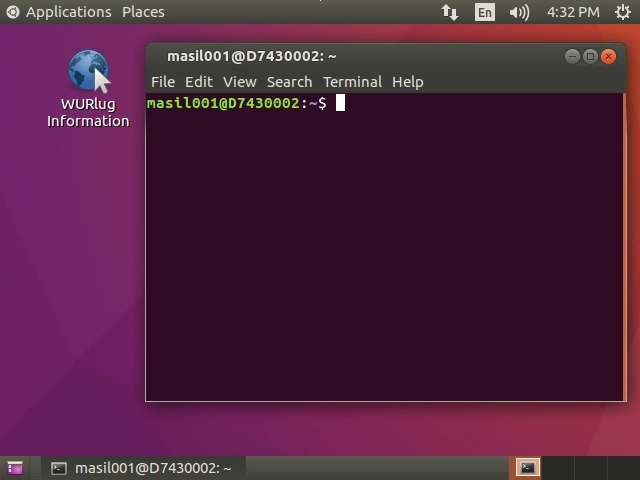
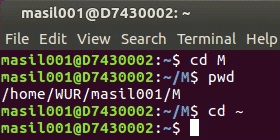
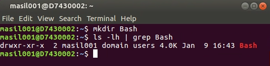
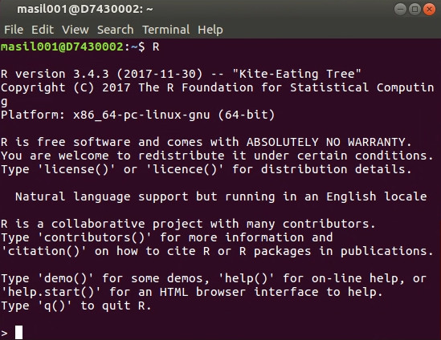
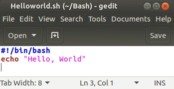
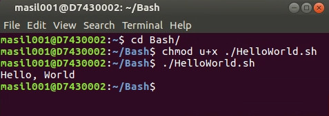
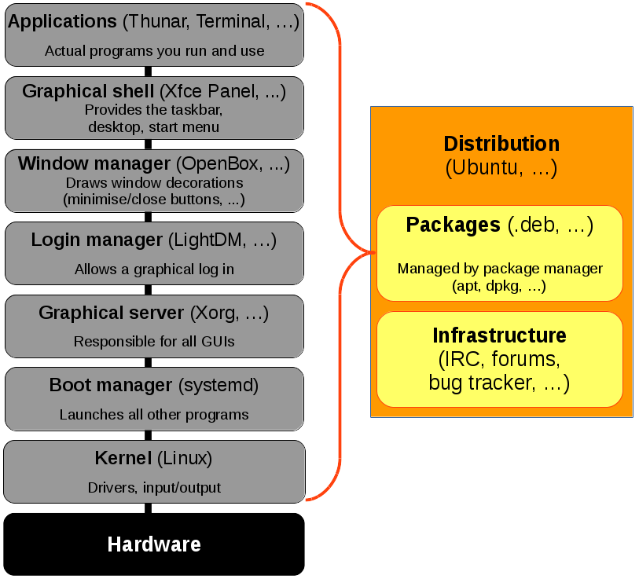

WUR Geoscripting 
Week 1, Lesson 4: Getting started with Linux, the terminal and Bash scripting
Good morning! Here is what you will do today:
| Time | Activity |
|---|---|
| Morning | Self-study: go through the following tutorial, and get confortable with a Linux environment and the terminal |
| 14:00 to 16:00 | Discussion |
| Rest of the afternoon | Do and finalise the exercise |
Today’s Learning objectives
- Knowing what Linux is & what you can do with it
- Getting comfortable working within a Linux environment
- Knowing how to use the terminal
- Running R and Python from the terminal
- Learn the basics of Bash scripting and know how to create a shell script
Linux?!
Linux is a free and open-source operating system kernel. In this course we will be working with a customised Ubuntu, which is a popular Linux distribution. A Linux distribution is an operating system that is built upon the Linux kernel and includes plenty of handy programs for daily work.
There is a large variety of different Linux distributions. One that is handy for geo-information science work is OSGeo-Live, which is also an Ubuntu-based distribution that has a wide range of free and open-source GIS and Remote sensing tools preinstalled. See this website for more information.
These tools are also available in other distributions, but they have to be installed manually. A general-use distribution such as Ubuntu or openSUSE is more suitable for regular day-to-day tasks, since not having the unnecessary tools installed takes less space and makes it work faster. It is also easier to find help for them than for specialised distributions. So in this course we will use a customised Ubuntu distribution with only the tools needed for this course preinstalled.
Why use a Linux distribution?
A Linux environment makes it much easier to install and combine a variety of open-source software, such as Python modules and GDAL, compared to other operating systems like Windows or macOS. In addition, open-source scientific software is often developed primarily for Linux (since that’s what most supercomputers and servers run!), and so it tends to be more stable and have more features on Linux. Furthermore, at Wageningen University & Research PC labs, ArcGIS and ArcPy are installed on the Windows machines, and this Python version tends to cause conflicts with open-source Python modules and tools (e.g. GDAL, GEOS).
Getting started on Linux
During the course we will work in a Linux environment. For students taking the course in Wageningen University, we provide a VMware Horizon virtual desktop infrastructure (VDI) that is managed by the WUR IT department. It is available over the internet for each student in the course and supported by the IT department.
The VMware Horizon VDIs can be accessed through the VMware Horizon client (preinstalled on WUR PCs). See this page for detailed instructions on how to use them.
Notice: Make sure you have no problems logging into and using the VDI. From here on out, we will try to work from within the VDI.
In case the VDI is not sufficient (e.g. for the project week) or you’d like to run Linux on your own hardware, we have two more alternatives:
- Local VirtualBox VMs installed on the PCs in the PC labs. These can only be accessed from a specific PC and intended as a fallback is there are problems when using VDIs.
- Your own hardware: if you know what you are doing, you can install Linux on your own laptops or external hard disks.
The VDIs are recommended, but ultimately the choice is up to you. In either case, the systems need to be set up.
VirtualBox VM setup
To set up VirtualBox, first find the provided image of OSGeo-Live on the network drive in the PC lab, which should be available to you as W:\Student\GRS-33806\OSGeo Live 12.ova. This is a compressed VirtualBox image with RStudio installed. For use on your own PCs, you can copy the file on your PC from the PC lab or download OSGeo-Live from its website.
Once you have the file, all you need to do is import it in VirtualBox by going to File → Import Appliance and specifying the location of the OVA file. Everything else can be left default.
Once importing is complete, you can go to the appliance settings and add a shared folder. That way all files you have in the shared folder will also be visible from the VM. You can see it by running the VM, opening the file manager in it and clicking on the shared folder name on the left side of the window.
Installing Linux on your own hardware
If you like, you can install a Linux distribution on your own laptops or external hard drives. Compared to virtualisation, it is much faster to run a Linux distribution directly. See a theoretical overview of running Linux on your own hardware and Linux system setup.
Once you have everything ready, login into your Linux VM, try out RStudio/RKWard, and also open QGIS.
Using the terminal and Bash
There are two ways to interact with your operating system: a graphical user interface (GUI), where you point and click, and a command-line interface (CLI), where you type commands to make something happen. GUIs are simpler to use, but CLIs are more powerful and faster for some tasks, once you get used to them.
Question 1: What are the advantages of using CLI? Can you think of some examples?
Most Linux distributions come with a terminal, which is a program you use to run CLI programs. You might know the Command Prompt program on Windows: that is a type of terminal. On Linux, there is a variety of terminal applications to choose from. You can start one on your virtual machine by clicking on Applications → System Tools → Terminal. This will look like:

A terminal is just a gateway to the world of CLIs, but through it you interact with a particular shell (or command interpreter) which speaks a programming language. The default shell on Linux is Bash, and programs written in the Bash language are called Bash scripts. Much like the R console, you can input commands to Bash line by line through the terminal.
Bash shell scripting, like also R or Python, allows multiple commands to be combined, facilitating automation. A shell script (shell program) is a text file that contains commands that are interpreted by the shell (see below, we will learn how to write a shell script). Each command can be linked in a script to combine several commands by providing the output of one as input to the other. Shell scripts can also contain the control structures common to the majority of programming languages (i.e. variables, logic constructs, looping constructs, functions and comments). The main distinction between shell programs and those written in C, C++, Java (to name but a few) is that shell programs are not compiled for execution, but are readily interpreted by the shell.
Question 2: What is a shell script?
Bash is not only the default shell on Linux, but also macOS, and there are versions of Bash that run on Windows too. It is included with Git for Windows, and in Windows 10 Bash is even included by default with the Windows Subsystem for Linux. However, without the wealth of CLI programs that Linux distributions come with, Bash functionality is fairly limited.
But enough theory: let’s try using the terminal in practice! Go through this exercise and see what happens: https://news.opensuse.org/2014/06/10/command-line-tuesdays-part-one/
Basic commands
Now go through the next exercise to learn how to navigate the file system: https://news.opensuse.org/2014/06/24/command-line-tuesdays-part-two/
The file system layout image might not display properly, but it is intended to show this: 
Once you’re done, you should have something like this displayed in your terminal:

Next, let’s go into some useful every-day commands: https://news.opensuse.org/2014/07/01/command-line-tuesdays-part-three/
Question 3: What is the difference between
ls -l,ls -lhandls -lh –si?
File manipulation
Now let’s dive into manipulating files and directories: https://news.opensuse.org/2014/07/08/command-line-tuesdays-part-four/
Now, create a directory called Bash (i.e. a directory that will contain our Bash scripts)
mkdir BashIt should now look like this:

Now, try out some more commands:
- make a directory and remove it (e.g.
mkdir namedirectory,rmdir namedirectory). - create an R script via RStudio or RKWard, and then remove it via the terminal using
rm filename.R. - create another file and copy it and then remove it, etc.:
cp source_file dest_file
rm dest_file- use
lscommands and its options.
Tip: Bash has a feature called Tab-completion. If you start writing a command or filename, pressing the Tab key a couple of times will give a list of suggestions for auto-completion. This is super-handy so that you never need to write filenames etc. In addition, you can recall the last commands you entered by using the up arrow key. Lastly, you can always open multiple terminals, even in tabs, by using File → Open Tab.
More information about commands
So far we have been using only a few of the functions that the commands offer. You can find a list of them by looking at their manual pages by following the last part of the tutorial: https://news.opensuse.org/2014/07/15/command-line-tuesdays-part-five/
Manual pages are text files displayed in a pager program that allows easy scrolling. The default pager is less, which you have already used in the third exercise. You can also look at its manual page using man less. Also try man intro: the “Introduction to user commands”, a well-written, fairly brief introduction to the Linux command line.
man introHere’s a list of most common commands:
pwd: show your current working directorycd: change directorycd ..: move up one directorymkdir: create directoryrmorrm -R: delete files or directoriessudo: running programs as root (administrator/super-user), which may ask for your user paswordls: listing files in a directorycp: copy files e.g. for backing up things or just copying. We will use these command in the scripts below.
Optional: You can also read the Ubuntu documentation on CLI to learn more, and let us know if you have questions about some commands.
Package installation and management
One of the greatest advantages of Linux distributions over other OSs is the package manager. Even if you never used Linux before, you are probably already using a package manager on your mobile device: The App Store, Google Play Store and Windows Store are all package managers, modelled after the Linux ones. A package manager is a central system for downloading, installing and removing software.
Each major Linux distribution has its own package manager, which is aware of all packages maintained by the distribution. These packages are tested and are known to work with that particular distribution version, so the package manager is the first place to look for installing additional software. The package manager is typically a command-line program, although some distributions also have GUI interfaces for it.
Ubuntu uses Aptitude as the package manager. Here is a short list of the most useful package manager commands on Ubuntu:
apt search: Search for a packagesudo apt install: Install a packagesudo apt update: Update one or more packagessudo apt remove: Uninstall a package- See
man aptfor more.
For instance, if you run apt search chrom, one of the results will be chromium-browser. It’s Chromium, the open-source version of Google Chrome. You can install it by running sudo apt install chromium-browser. Similarly, the Ubuntu package repository contains a lot (but not all) of R packages (they are prefixed with r-cran-) and Python packages (prefixed with python3-; the ones prefixed with python- are for Python 2 which we will not be using this year). If there is a package available in the distribution repository, almost always it is better to use that instead of using a package manager built into the language (install.packages in R and easyinstall/pip/conda in Python).
The aforementioned commands are specific to the Debian fabily of Linux distribution (of whom Ubuntu is a member). In other distributions, package manager syntax is different, but the result is the same. For instance, in openSUSE the equivalent commands would be zypper search, sudo zypper install, sudo zypper update and sudo zypper remove.
Whenever a package is not included in the distribution repository, one option is to look for additional software sources. Ubuntu allows users to maintain their own packages through a system called Personal Package Archives (PPA). However, these packages are not tested and are not guaranteed to work, or could even cause problems in the system, so you have to be careful. Other distributions also have their own third-party repository systems: openSUSE uses Open Build Service, Fedora uses Copr etc.
If a package doesn’t exist in third party repositories either, there is often the possibility to download the source code of a package and compile it. Often times cross-platform software vendors provide installers for Windows and source code for Linux. However, compiling from source yourself should only be done as the very last resort; in fact, it is often easier and safer to create a package yourself than to try to build it from source!
Starting R or Python from the terminal
Starting and stopping R from the terminal (this is the same as the R console you know from RStudio/RKWard):R ## just type R and then q() to exit
q()
Starting and stopping Python from the terminal:
python
exit()Scripting in the terminal
Hello, world Bash script
Bash is primarily a scripting language, so it would be a crime not to talk about scripting. Let’s dive straight in with a Bash script. More precisely the infamous “Hello World” script. You can create a bash script by opening your favorite text editor to edit your script and then saving it (typically the .sh file extension is used for your reference, but is not required. In our example, we will be using the .sh extension).
So let’s get started. First, go to the Bash directory you just created. Within this directory create a simple text file and call it HelloWorld.sh, then add the following text and save. You can use the gedit editor, or use RStudio or RKWard as a sort of text editor. In fact, there are even command-line text editors, like nano.

#!/bin/bash
echo "Hello, World"
The first line of the script just defines which interpreter to use (and where it is located). That’s it, simple as that!
Note: There is no leading whitespace before #!/bin/bash, and you cannot add any comments before it. This shebang should be the very first thing in the file.
To find out where your bash interpreter is located type the following in the terminal (this works also on a Mac terminal!):
type bash## bash is /usr/bin/bash
Second, to run a bash script you first have to have the correct file permissions. We do this with chmod (change mode) command in terminal as follows:
chmod u+x Bash/HelloWorld.sh # Gives your user execute permissions
Optional: More info about chmod for your future reference. Note: today is just an introduction to let you know what is possible so that you can find your way easier in the future.
Below is a summary of what we have done in the terminal:
echo "Go to the Bash folder"
cd Bash
echo "Check that the file is there using the ls command:"
ls
echo "Then change the permissions:"
chmod u+x HelloWorld.sh
echo "We can now run our first Bash script:"
./HelloWorld.shHopefully you should have seen it print Hello, World onto your screen. If so well done! That is your first Bash script (see below for a screenshot):

Question 4: Why do we add
./in front of the Bash script?
Note: we can also access the Terminal from R using the system() function that can invoke an OS command:
## R code
setwd("Bash/") # Set the working directory in R
print(system("./HelloWorld.sh", intern = TRUE)) # Execute this command in Bash## [1] "Hello, World!!!"
Bash script with a variable
Variables basically store information. You set variables like this (you can type this in the terminal).
var="FOO"var can be anything you want as long as it doesn’t begin with a number. “FOO” can be anything you want. There cannot be any space in between the = sign. To access the information from the variable you need to put a ‘$’ in front of it like this:
echo $varNow create the following e.g. variables.sh script in the Bash folder and apply the chmod u+x variables.sh command on this script using the terminal.
#!/bin/bash
echo "Now with the read function"
clear
echo "Please enter your name"
read name
echo "Please enter your age"
read age
echo "Please enter your sex. Male/Female"
read sex
echo "So you're a $age year old $sex called $name"./variables.shQuestion 5: Try it out yourself, and try to do a calculation of e.g. a + b as input variables. Hint: Shell-tips
Optional: If you want to learn more about Bash scripting: https://help.ubuntu.com/community/Beginners/BashScripting
Using the GDAL library from the terminal
We will learn more about GDAL in the later lessons. GDAL is a very powerful and fast processing library written in C/C++ for raster and vector geospatial data formats. Now via the terminal we can access GDAL directly! E.g. we can check out what the current version of GDAL is that is installed on our Linux OS.
Let’s download a file from The intro to raster lesson: Download the gewata.zip file from Github (link) and unzip in the data directory. Type the following in the data directory: (Note: You can write a shell script to do the following commands below but first type in the commands via the terminal to understand what is happening.)
echo "the current GDAL version is:"
gdal-config --versionOne of the easiest and most useful commands in GDAL is gdalinfo. When given an image as an argument, it retrieves and prints all relevant information that is known about the file. This is especially useful if the image contains additional tag data, as is the case with TIF files.
Using gdalinfo:
cd data
ls *.tif
gdalinfo -nomd -norat -noct LE71700552001036SGS00_SR_Gewata_INT1U.tifNow let’s calculate the NDVI via GDAL terminal by using the gdal_calc.py script. See GDAL_calc for more information.
cd data
cp LE71700552001036SGS00_SR_Gewata_INT1U.tif input.tif
echo "* all files in the directory"
ls
echo "* now apply gdal_calc: Command line raster calculator with numpy syntax"
gdal_calc.py -A input.tif --A_band=4 -B input.tif --B_band=3 --outfile=ndvi.tif --calc="(A.astype(float)-B)/(A.astype(float)+B)" --type='Float32'
echo "* remove the input temporary file"
rm input.tifQuestion 6: Try to write to calculate the NDVI using the lines above in a nice and short shell script.
-
Hint 1:
cd ../data(to move back from the Bash folder and move into the data folder) -
Hint 2: No spaces in file names are allowed and try to use variables e.g.
fn=$(ls *.tif)
#!/bin/bash
echo "teamname"
echo "14 January 2016"
echo "Calculate LandSat NDVI"
cd ../data
fn=$(ls *.tif)
echo "The input file: $fn"
outfn="ndvi.tif"
echo "The output file: $outfn"
echo "calculate ndvi"
gdal_calc.py -A $fn --A_band=4 -B $fn --B_band=3 --outfile=$outfn --calc="(A.astype(float)-B)/(A.astype(float)+B)" --type='Float32'
echo "look at some histogram statistics"
gdalinfo -hist -stats $outfn
More info here on the power of GDAL via the terminal: GDAL_website and gdalinfo
Handy functions are (See the examples at the bottom):
Optional:
More info about Bash basics from GNU.
If you are ready and want the learn more about using GDAL from the terminal, see here for another tutorial.
Finding help
Just like with programming, you may find yourself facing some issue while using Linux (software availability, programs or drivers not working as expected, bugs etc.). While during the course you may make use of the Q&A forum, for the future it is useful to know where to find help.
System overview
One important aspect to realise about Linux distributions is that they are a volunteer effort. That means that unlike for example Windows, there usually is no tech support number you can call; instead, there are ways to communicate with other users who may know a solution, or indeed with the developers who wrote the software directly. Another important aspect to keep in mind is that a Linux distribution is like an onion: it is made of a whole lot of different layers of software, and identifying which layer is the cause of the problem is quite important. Below is a graph showing some of the most important layers.

Each of these (and many more) are software projects with their own development teams. They are typically open-source, and their developers only provide the source. Distribution maintainers are responsible for taking this source, compiling it into actual programs, testing them, putting them into packages and distributing them to users. A package is a relatively self-contained piece of software for a particular distribution that contains information on what other packages it requires to function properly and packages that it expects, but can work without. Users are only supposed to install distribution-provided packages: anything else is potentially unsafe, since it would mean the software has not received the testing that distribution packages have to go through.
Given all this complexity, issues may be caused by misconfiguration, user error, or actual bugs in software; which in turn may lie in the packaging of software, or software itself (programs or libraries that the programs use). Usually the term downstream is used to describe distribution package maintainers, and upstream to describe the original developers of the software.
How to get help
Just like with programming issues, a search engine is your first line of getting information. Note, however, that Linux distributions are for the most part quickly-moving targets: instructions written for one version of your distribution might need some changes in the next. So even if you find what seems to be a solution, you need to be critical about whether it does what you want. Checking the date is a good idea: solutions that were good 4 years ago are likely no longer relevant.
Of special note is that each major Linux distribution maintains a wiki which serves as documentation and a knowledge base for common issues. You should search the wiki first and foremost, since it typically has up-to-date information for your specific distribution. For instance, if you are using Ubuntu, see the Ubuntu wiki.
If you couldn’t find the answer, your next step should be to ask the community of the distribution. Typically there are two support channels: IRC for instant messaging, and support forums.
IRC (Internet Relay Chat) is used for short and straightforward questions, or questions that require a lot of back-and-forth (debugging, getting diagnostic data etc.). Packagers and software developers alike very often can be found on IRC, and are happy to help with any questions that may pop up. Most of them are on the Freenode IRC server. For instance, to access the IRC chatroom for Ubuntu support, you can use the web interface to chat.freenode.net #ubuntu chatroom (see also IRC guidelines and list of chatrooms).
Each distribution also has a dedicated support forum. Forums are more useful for more complicated questions that are difficult to explain using IRC, or for non-urgent issues. See for instance the Ubuntu forums. Ubuntu in particular also has its own questions and answers board called Ask Ubuntu.
By this point, you should hopefully have found a solution to the problem you are facing. Sometimes, however, you may uncover an actual bug in the software. In the case you do, you should try to report it to a bug tracker. Note: Reporting bugs is quite advanced, and should only be done if you are sure you found a bug. It is, however, an integral part of the open-source development model: a bug that is reported is brought to the attention of the software developer and gets fixed for each and every user of the software. Just like with questions, bugs should first be reported downstream to your distribution, and only reported upstream if asked by downstream developers (or if you are sure that the bug is indeed in the source of the software, rather than the packaging of it). See for instance the Ubuntu bug reporting guidelines.
Excercise
Write a shell script that processes Landsat data as provided in the Intro to Raster lesson (link). Specifically, the script should:
- Take a URL as an argument. The URL links to a ZIP file containing Landsat bands. So the script should run when called as e.g.
./ProcessLandsat.sh https://github.com/GeoScripting-WUR/IntroToRaster/raw/gh-pages/data/gewata.zip. The script should download and extract the ZIP file into a subdirectory calleddatafor further processing. - Derive NDVI from the Landsat bands, resample it to pixels of 60 m, reproject to WGS84 (EPSG:4326) and put the output into a subdirectory called
output. - Be reproducible and rerunnable: no use of
cdand running the script twice still gives correct output. The script leaves only one output file, no intermediate ones.
For bonus points, try to find a way to achieve the second task without creating any temporary intermediate files.
Tips: make use of Bash variables such as $1, utilities like mkdir, wget, unzip, rm, gdalwarp and pipes (|). Check their man pages for arguments.
Make sure your script is clear and reproducible, make a new GitLab project according to the same guidelines as yesterday, and upload the script there. Test the script of another team (see the random team selector Shiny app) tomorrow morning and add an issue with your testing results and score according to the rubric.
Do not forget to add a teamname, and members and date of script at the top of your script.
More information
- Hands-on introduction to bash basics for beginners
- A great bash scripting tutorial
- An overview of terminal commands
- http://www.howtogeek.com/140679/beginner-geek-how-to-start-using-the-linux-terminal/
- http://www.howtogeek.com/howto/42980/the-beginners-guide-to-nano-the-linux-command-line-text-editor/
- http://linuxcommand.org/lc3_learning_the_shell.php
- http://www.cyberciti.biz/faq/pwd-linux-unix-command-examples/
- For macOS users and introduction to use the terminal on macOS
- Python code Building plug-in
- Using Jupyter notebook within OSGEO